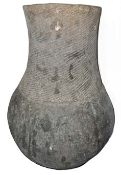
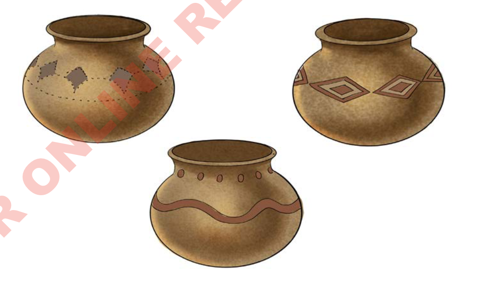

Kielelezo namba 17, kinawasilisha mfano wa chungu kilichochomwa baada ya kufinyangwa.

Kielelezo namba 18, kinawasilisha vyungu vilivyochorwa mapambo mbalimbali.

Sayansi na teknolojia ya asili katika ufinyanzi, ilizisaidia jamii za kale kuwa na vifaa mbalimbali kwa matumizi ya nyumbani na biashara. Kwa mfano, vyungu vilitumika kupikia chakula. Pia, sahani na bakuli zilitumika kulia chakula na mitungi ilitumika
64